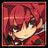
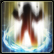

※現在テスト中！！
回覧ありがとうございます。
こちらはアバウトページです。
サンプル
| 名前 | 時間 | フレーム | HIT | 有利F | 補足 |
|  | 覚醒 | 1.3s | 78 | － | 19 | |
|
 | メガスラッシュ | 0.6s | 36 | × | 0 | |
|
各キャラ、各職の表は上記のように収納されています。クリックするとﾋﾞﾖｰﾝと伸びます。
また、アイコンをクリックすると動画が表示されます。
名前：スキル名
時間：敵が止まっている時間(単位は秒)
フレーム：敵が止まっているフレーム数(1秒間60フレーム)
HIT：暗転中に攻撃が当たるかどうか
(○：全て当たる △:途中まで当たる、カス当たり ×：暗転中に1HITもしない －:そもそも攻撃が無い)
有利F：有利フレーム、暗転が解ける前に動けるフレーム数 大きいほど暗転を繋ぎやすい
数が多く、さらに今回は一からのスタートなのでまだまだ情報が揃っていません。
筆者の近況も忙しいため気長に見守っていただければと思います。
動画の公募状況や作業状況についてはブログやツイッターの方で確認してください。
お約束
Published by NHN Japan Corporation.
Copyright (C) KOG Corporation. All rights reserved.